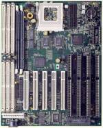

Системная плата – основа
компьютера. На ней находятся основные электронные элементы: процессор,
память, BIOS, набор микросхем и др.

Типы системных плат
All-In-One – плата, на которой
размещены все необходимые для работы компьютера элементы.
Motherboard (материнская)
– плата, содержащая основные узлы и разъемы расширения для установки дочерних
плат.
Состав материнской платы
На материнской плате расположены:
1. Наборы больших однокристальных
электронных микросхем – чипов (центральный процессор, другие процессоры,
интегрированные контроллеры устройств и их интерфейсы)
2. Микросхемы оперативной
памяти и разъемы их плат
3. Микросхемы электронной
логики
4. Простые радиоэлементы
(транзисторы, конденсаторы, сопротивления и др.)
5. Разъемы системной шины
(стандартов ISA, EISA, VESA, PCI и др.)
6. Слоты для подключения
плат расширений (видеокарт или видеоадаптеров, звуковых карт, сетевых карт,
интерфейсов периферийных устройств IDE, EIDE, SCSI…)
7. Разъемы портов ввода/вывода
(COM, LPT)
Общая характеристика
Материнская
плата предназначена для размещения или подключений всех остальных внутренних
устройств компьютера – служит своеобразной платформой, на базе которой
строится конфигурация всей системы.
Тип и
характеристики различных элементов и устройств материнской платы, как правило,
определяется типом и архитектурой центрального процессора (материнские
платы на базе процессоров фирм Intel, AMD, Cyrix и др. – 8086/8088/80188,
286, 386, 486/586/686, Pentium, Pentium II). Как правило, именно центральный
процессор или процессоры, их семейство, тип, архитектура и исполнение определяют
тот или иной вариант архитектурного исполнения материнской платы.
По числу
процессоров, составляющих центральный процессор, различают однопроцессорные
и многопроцессорные (мультипроцессорные) материнские платы. Большинство
персональных компьютеров являются однопроцессорными системами и комплектуются
однопроцессорными материнскими платами.
Настройка
материнской платы на конкретные электронные компоненты осуществляется с
помощью перемычек (jumpers). В частности, этими перемычками устанавливается
настройка на конкретную модель процессора – регулируются тактовая частота
и напряжение питания.
Материнская
плата крепится к шасси корпуса системного блока, как правило, двумя винтами
с изолирующими пластмассовыми креплениями.
Современные требования к материнским
платам
Современные материнские платы
соответствуют требованиям программы Energy Star. Это энергосберегающая
программа, введенная американским Агенством защиты окружающей среды (EPA
– Environment Protection Agency). Согласно этим требованиям, плату относят
к разряду "зеленых" (green motherboard), если ее энергопотребление в режиме
холостого хода не более 30 Вт, в ней не используются токсичные материалы,
допускается 100-процентная утилизация после истечения срока службы.